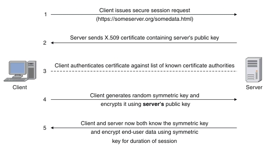
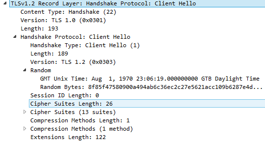
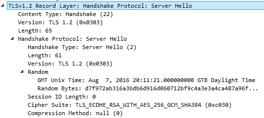
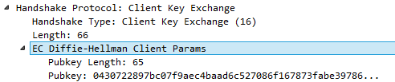
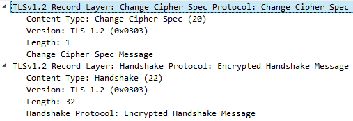
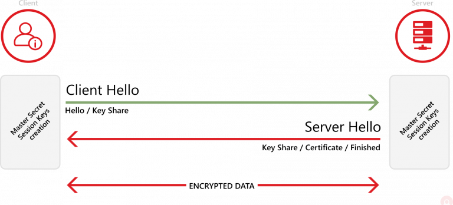

建立ssl/tls连接需要若干步骤,协议结合使用了对称加密和非对称加密,客户机和服务端需要协商所使用的算法并交换密钥信息.
下面以TLS 1.2为例介绍下流程(TlS1.3做了很多优化)
流程

补充说明
Client Hello
客户端发送的’Client Hello’包括一下信息:Client Version
客户端发送一组支持的TSL/SSL协议版本(首选版本放在最前面,通常是最新可用的版本)Client Random
32 byte的随机数,client random和server random被用于生成用于加密的密钥.
在最初的 TLS 1.2规范中,前4个字节表示客户机的当前日期和时间(以纪元格式,即时间戳,’2022-09-27 10:32:51’的毫秒级时间戳:1664245971662),剩下的28个字节应该是随机生成的数字。
然而,IETF后来建议不要这样做Session ID
用于连接的会话ID,如果session_id 不是空的,服务器将搜索以前缓存的会话,并在找到匹配的会话时恢复该会话Compression_Method
用于压缩SSL的数据包,可提升传输速度,但有风险(https://www.acunetix.com/blog/articles/tls-vulnerabilities-attacks-final-part/)Cipher Suites
Cipher Suites是密码算法的组合.通常,每个密码套件包含一个用于以下任务的加密算法- 密钥交换(key exchange)
- 身份验证(authentication)
- 批量(数据)加密(bulk data encryption)
- 消息身份验证(message authentication)
客户端按照偏好顺序发送它所支持的所有密码套件的列表,理想情况下,client希望使用发送的第一个cipher suite建立连接
样例(TLS_ECDHE_ECDSA_WITH_AES_128_GCM_SHA256) - TLS is the protocol being used
- ECDHE is the key exchange algorithm (Elliptic curve Diffie–Hellman)
- ECDSA is the authentication algorithm (Elliptic Curve Digital Signature Algorithm)
- AES_128_GCM is the data encryption algorithm (Advanced Encryption Standard 128 bit Galois/Counter Mode)
- SHA256 is the Message Authentication Code (MAC) algorithm (Secure Hash Algorithm 256 bit)
Extensions
附加功能,可以通过扩展来实现,比如支持(elliptic curve cryptography, point formats for elliptic curve cryptography, signature algorithms…)
如果服务器不能提供附加功能，客户端可能会中止握手example

Server Hello
服务端收到’Client Hello’会恢复’Server Hello’,可能包含选定的选项(来自’Client Hello’建议的选项),也可能是握手失败消息
包含:Server Version
从客户端提供的版本中选择 SSL/TLS 协议的首选版本(preferred version)Server Random
和客户端发送的类似,32 byte的随机数Session ID
如果客户端Session ID不是空的,服务器将搜索以前缓存的会话,如果找到匹配,则使用该会话ID恢复会话
如果客户端会话ID为空,则服务器可以创建一个新会话并将其发送出去Cipher Suites
CompressionMethods
Server Certificate(Sever->Client)
server向client发送经过签名的 TLS/SSL 证书，以证明其身份,还包含sever的公钥。Client Certificate(Client->Server,Optional)
在极少数情况下,server可能要求client使用client证书进行身份验证。如果是,client将向server提供其已签名的证书Server Key Exchange(Sever->Client)
只有在server提供的证书不足以让client交换pre-master secret时,才会发送服务器密钥交换消息。
(如:DHE_DSS,DHE_RSA,DH_anon 是这样的)。Server Hello Done(Server->Client)
sever将此消息发送到client以确认Server Hello消息已完成example

Client Key Exchange
在接收到’Server Hello Done’后开始.Pre-Master Secret
client使用接收自server的非对称密钥(asymmetric encryption)加密’pre-master secret’,这样只要server才能解密得到’pre-master secret’
Master Secret
server接收到’pre-master secret’后会使用私钥解密数据,client和server使用伪随机函数(PRF)根据前面交换的随机值(Client Random 和 Server Random)计算’master secret’
PRF 是一个用来产生任意数量的伪随机数据的函数
‘master secret’占48 byte,是对称加密秘钥,随后,client和server都将使用对称加密的数据进行其余的通信(使用’master secret’生成一组秘钥用于加密/解密数据)- client_write_MAC_key: Authentication and Integrity check
- server_write_MAC_key: Authentication and Integrity check
- client_write_key: Message encryption using symmetric key
- server_write_key: Message encryption using symmetric key
- client_write_IV: Initialization Vector used by some AHEAD ciphers
- server_write_IV: Initialization Vector used by some AHEAD ciphers
Client Change Cipher Spec
此时client已经准备好切换到一个安全的、加密的环境。’Change Cipher Spec’协议用于更改加密算法
从现在起,client发送的任何数据都将使用对称共享密钥进行加密。
Client Handshake Finished
来自client的握手过程的最后一条消息表示握手已经完成。这也是安全连接的第一条加密消息。
Server Finished
- Server Change Cipher Spec
server准备好切换到加密的环境。
从现在起，服务器发送的任何数据都将使用对称共享密钥进行加密。 - Server Handshake Finished
来自server的握手过程的最后一条消息,表示握手结束。
- Server Change Cipher Spec
TLS1.3的握手
在TLS 1.2及更早版本中,TLS握手需要完成两个round trips
- 第一次round trip是交换问候(hellos)
- 第二次round trip是密钥交换(key exchange)和changing the cipher spec(加密方式,加密算法)
在TLS 1.3中,这个过程是流线型的，只需要一次round trip。
TLS 1.3也不再支持 TLS 压缩。

在 TLS 1.3中,当server发送 hello 时会猜测server最可能选择的密钥协商协议。同时,它使用猜测协议共享密钥。
server的 hello 消息还包含共享密钥(shared key)、证书和服务器完成的消息。
不需要cipher change,因为在交换信息之后，双方都已经拥有了加密通信所需要的一切。
Cipher Suites
Cipher suites are sets of encryption algorithms(加密算法)
A cipher suite always includes four different algorithms for four purposes: the key exchange algorithm, the authentication algorithm, the data encryption algorithm, and the Message Authentication Code (MAC) algorithm.
验证
使用curl -v观察支持https的站点
1
2
3
4
5
6
7
8
9
10
11
12
13
14
15
16
17
18
19
20
21
22
23
24
25
26
27
28
29
30
31
32
33
34
35
36
37
38
39
40
41
42
43
44
45
46
47
48
49
50
51
52
53
54
55
56
57
58
59
60
61
62
63
64# http/1.1的站点,如百度
curl https://baidu.com -v
# 输出如下:
# * Rebuilt URL to: https://baidu.com/
# * Trying 39.156.66.10...
# * TCP_NODELAY set
# * Connected to baidu.com (39.156.66.10) port 443 (#0)
# * ALPN, offering h2
# * ALPN, offering http/1.1
# * successfully set certificate verify locations:
# * CAfile: /etc/ssl/certs/ca-certificates.crt
# CApath: /etc/ssl/certs
# * TLSv1.3 (OUT), TLS handshake, Client hello (1):
# * TLSv1.3 (IN), TLS handshake, Server hello (2):
# * TLSv1.2 (IN), TLS handshake, Certificate (11):
# * TLSv1.2 (IN), TLS handshake, Server key exchange (12):
# * TLSv1.2 (IN), TLS handshake, Server finished (14):
# * TLSv1.2 (OUT), TLS handshake, Client key exchange (16):
# * TLSv1.2 (OUT), TLS change cipher, Client hello (1):
# * TLSv1.2 (OUT), TLS handshake, Finished (20):
# * TLSv1.2 (IN), TLS handshake, Finished (20):
# * SSL connection using TLSv1.2 / ECDHE-RSA-AES128-GCM-SHA256
# * ALPN, server accepted to use http/1.1
#http2的站点,如本站
* ALPN, offering h2
# * ALPN, offering http/1.1
# * successfully set certificate verify locations:
# * CAfile: /etc/ssl/certs/ca-certificates.crt
# CApath: /etc/ssl/certs
# } [5 bytes data]
# * TLSv1.3 (OUT), TLS handshake, Client hello (1):
# } [512 bytes data]
# * TLSv1.3 (IN), TLS handshake, Server hello (2):
# { [106 bytes data]
# * TLSv1.2 (IN), TLS handshake, Certificate (11):
# { [4053 bytes data]
# * TLSv1.2 (IN), TLS handshake, Server key exchange (12):
# { [300 bytes data]
# * TLSv1.2 (IN), TLS handshake, Server finished (14):
# { [4 bytes data]
# * TLSv1.2 (OUT), TLS handshake, Client key exchange (16):
# } [37 bytes data]
# * TLSv1.2 (OUT), TLS change cipher, Client hello (1):
# } [1 bytes data]
# * TLSv1.2 (OUT), TLS handshake, Finished (20):
# } [16 bytes data]
# * TLSv1.2 (IN), TLS handshake, Finished (20):
# { [16 bytes data]
# * SSL connection using TLSv1.2 / ECDHE-RSA-AES128-GCM-SHA256
# * ALPN, server accepted to use h2
# * Server certificate:
# * subject: CN=www.programnotes.cn
# * start date: May 22 00:00:00 2022 GMT
# * expire date: May 22 23:59:59 2023 GMT
# * subjectAltName: host "programnotes.cn" matched cert's "programnotes.cn"
# * issuer: C=CN; O=TrustAsia Technologies, Inc.; CN=TrustAsia RSA DV TLS CA G2
# * SSL certificate verify ok.
# * Using HTTP2, server supports multi-use
# * Connection state changed (HTTP/2 confirmed)
# * Copying HTTP/2 data in stream buffer to connection buffer after upgrade: len=0
# } [5 bytes data]
# * Using Stream ID: 1 (easy handle 0x56113a3fd580)
# } [5 bytes data]inet netmask broadcast
参考
- 图示,详细流程 https://tls12.xargs.org/
- https://www.ibm.com/docs/en/cics-tg-zos/9.3.0?topic=ssl-how-connection-is-established
- https://www.acunetix.com/blog/articles/establishing-tls-ssl-connection-part-5/
- 使用压缩算法有什么风险 https://www.acunetix.com/blog/articles/tls-vulnerabilities-attacks-final-part/
- pre-master secret https://juejin.cn/post/6906126429381984264
- 图解SSL/SSL协议 https://ruanyifeng.com/blog/2014/09/illustration-ssl.html
- master secret